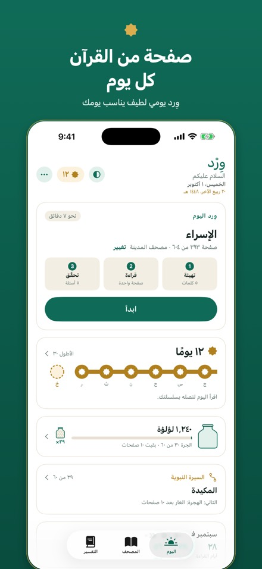
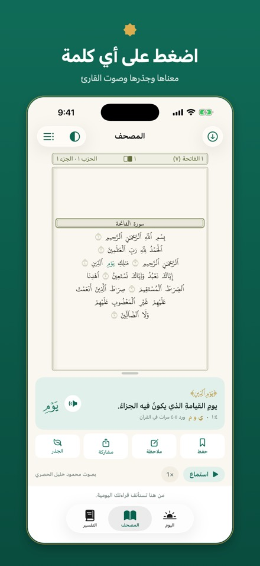
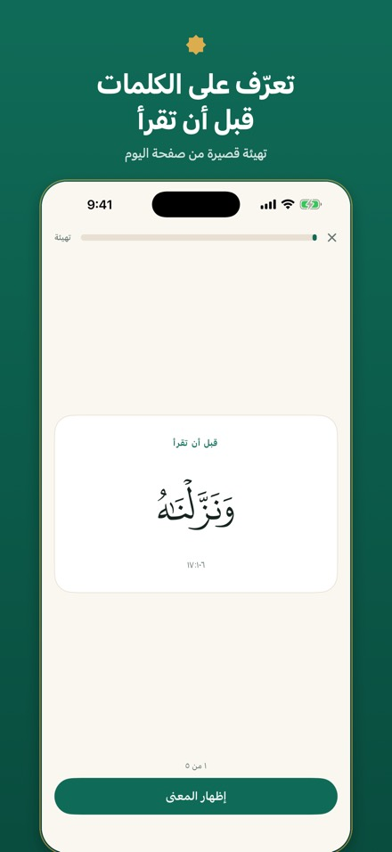
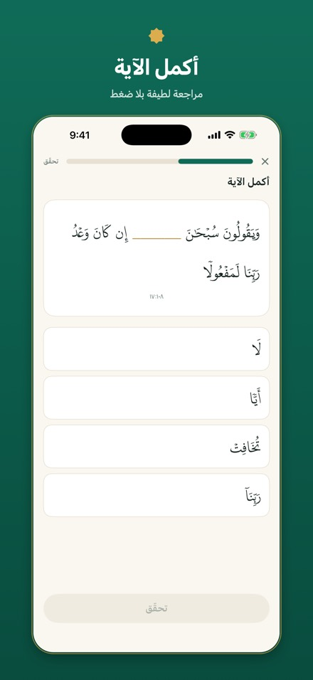
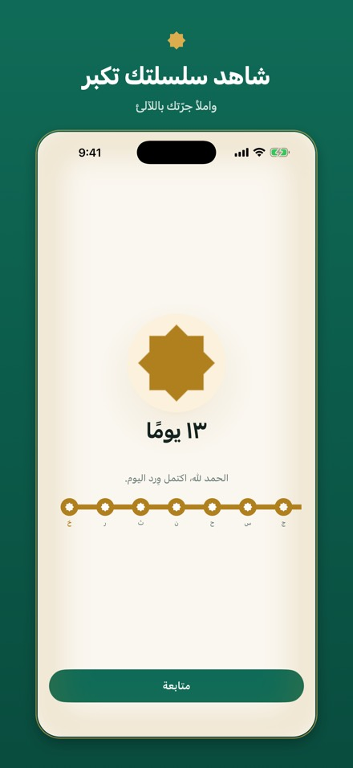
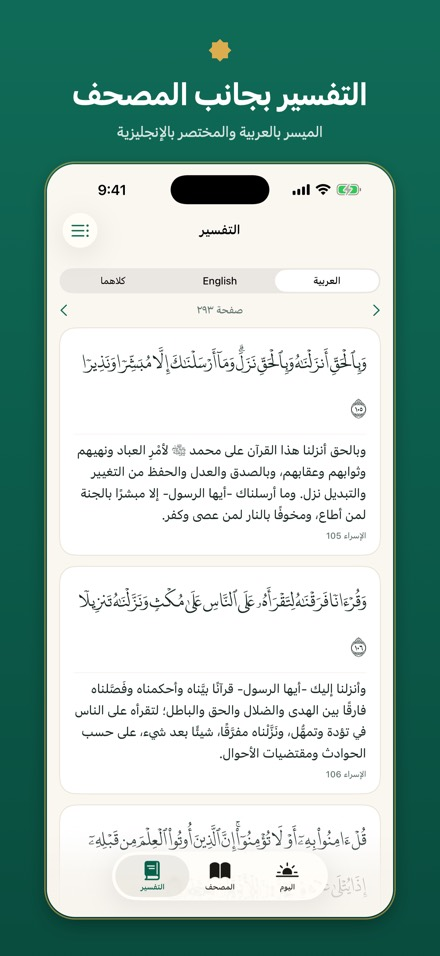
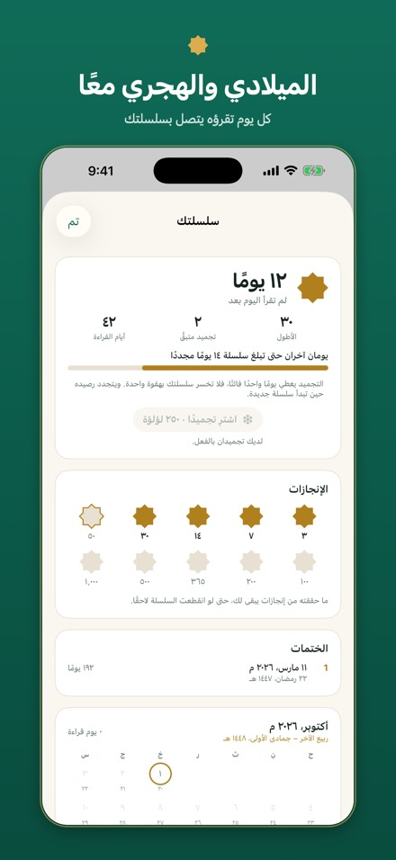
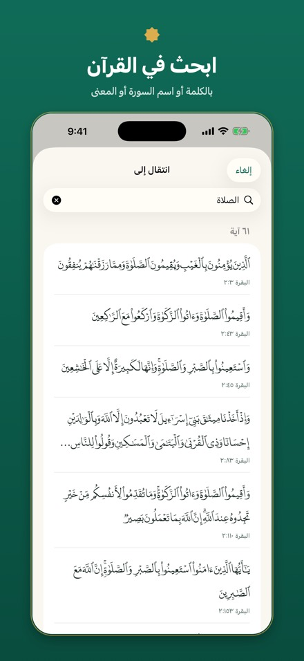

كل يوم
ثلاث خطوات قصيرة، ثم تمّ وِردك.
١تهيئة
خمس كلمات من صفحة اليوم، لكل كلمة معناها وجذرها.
٢قراءة
الصفحة كما هي في مصحف المدينة ذي الستمئة وأربع صفحات. اضغط على أي كلمة لبيان معناها، أو استمع والكلمة تُبرَز مع تلاوة القارئ.
٣تحقّق
أسئلة لطيفة قليلة، ولا يكلّفك الخطأ شيئًا. وتعود الكلمات للمراجعة قُبيل أن تنساها.








ما في التطبيق
كل ما يعينك على وِردك، بلا ما يشغلك عنه.
داوم
- سلسلة أيام تتصل كلما قرأت، مع أيام «تجميد» لما يشغلك.
- لآلئ تملأ جرّة كلما قرأت: علامة هادئة على الاجتهاد، لا منافسة.
- رحلة في السيرة النبوية تنفتح فيها محطة جديدة مع كل نصف جزء.
- احتفاء بالختمة مع دعاء عند إتمامها.
افهم
- اضغط على أي كلمة لبيان معناها من «الميسر في غريب القرآن»، وجذرها وعدد مرات ورودها.
- التفسير بجانب الصفحة: الميسر بالعربية والمختصر بالإنجليزية.
- تتبّع الجذر: كل صيغه وكل آية ورد فيها.
- ابحث باسم السورة أو بكلمة عربية أو بالمعنى الإنجليزي.
استمع
- محمود خليل الحصري أو مشاري راشد العفاسي أو محمد صديق المنشاوي.
- تُبرَز كل كلمة أثناء تلاوتها.
- دون اتصال: يُحفظ أسبوعك القادم تلقائيًا عبر الواي فاي، أو نزّل أي جزء.
- تستمر التلاوة صفحةً بعد صفحة والشاشة مقفلة.
على طريقتك
- من صفحة إلى عشرين صفحة يوميًا، وتذكيرات في الأوقات التي تختارها.
- العربية أو الإنجليزية، من داخل التطبيق.
- التسبيع: ختم القرآن كل أسبوع بأسباعه السبعة المعروفة.
- مزامنة عبر iCloud بين الآيفون والآيباد، وأداة على الشاشة الرئيسية، وحلقات عائلية خاصة.
على الآيباد
أدِر الجهاز، فينفتح المصحف كالكتاب.
يعمل وِرْد على الآيباد كما يعمل على الآيفون، بالقراءة نفسها والسلسلة والإعدادات، متزامنةً عبر iCloud.


صفحتان في الوضع الأفقي
أمسك الآيباد بالعرض، فيعرض قسم المصحف صفحتين متقابلتين: الفردية على اليمين والزوجية على اليسار، كما في المصحف المطبوع. واسحب لتقليب الصفحتين معًا.
صفحة في الوضع الرأسي
وفي الوضع الرأسي صفحة واحدة على هيئة المصحف المطبوع، بخط أكبر منه على الآيفون.
كيفما أمسكته
يعمل في كل الاتجاهات، ومع تقسيم الشاشة أيضًا، فيكون وِرْد بجانب ملاحظاتك أو تطبيق آخر.
القراءة نفسها على كل أجهزتك
ابدأ على الآيفون وأكمل على الآيباد. موضعك وسلسلتك ولآلئك تتزامن عبر مساحتك على iCloud، دون تسجيل دخول.
عهدنا
تطبيق للعبادة، لا لشدّ الانتباه.
لا «قلوب» ولا «أرواح» ولا أصوات عقاب. لا يُحجب القرآن خلف اشتراك أو شاشة إخفاق.
تُظهر حلقات العائلة من قرأ اليوم وسلسلة أيامه، ولا ترتّب أحدًا على أحد.
تُطابَق كل كلمة من القرآن على نص تنزيل الموثّق قبل صدور أي إصدار.
لا حساب ولا إعلانات ولا تتبّع. لا يجمع وِرْد أي بيانات.
من القرّاء
ماذا يقول القرّاء
وِرْد في مرحلة التجربة الآن، وستظهر هنا آراء القرّاء بعد الإطلاق بإذن الله.
تستخدم وِرْد بالفعل؟ يسعدنا أن نسمع منك: شاركنا تجربتك، وأخبرنا هل تأذن لنا بنشر كلامك، وبأي اسم.
أسئلة
أسئلة شائعة
هل وِرْد مجاني؟
نعم. بلا إعلانات ولا اشتراكات ولا مشتريات داخل التطبيق.
هل توجد نسخة لأندرويد؟
ليس بعد. يصدر وِرْد أولًا للآيفون والآيباد، ونسخة أندرويد مخطّط لها بعد ذلك، وستُعلن في هذه الصفحة حين تجهز بإذن الله.
هل يعمل على الآيباد؟
نعم. في الوضع الأفقي يعرض المصحف صفحتين متقابلتين كالمصحف المفتوح، وفي الوضع الرأسي صفحة واحدة كبيرة، وتتزامن قراءتك مع الآيفون عبر iCloud. المزيد عن الآيباد
ماذا يحدث إن أخطأت في الإجابة؟
لا شيء. لا «قلوب» ولا «أرواح»، ولا يمنعك الخطأ من القراءة أبدًا، وإنما تعود الكلمة للمراجعة أبكر.
فاتني يوم، فهل ضاعت سلسلتي؟
ليس بالضرورة. أيام «التجميد» تغطي اليوم الفائت تلقائيًا، ويمكنك أن تحتفظ بتجميدين، وتشتري غيرهما بمئتين وخمسين لؤلؤة لكل واحد. وبعد اليوم الفائت يعرض عليك التطبيق، دون إلزام، صفحات إضافية قليلة للتعويض.
كم أقرأ كل يوم؟
صفحة واحدة في الأصل، نحو سبع دقائق مع التهيئة والأسئلة. واختر من صفحة إلى عشرين صفحة من ⋯ ← الصفحات يوميًا، ويُظهر لك التطبيق كم يومًا تستغرق ختمتك.
هل يمكنني أن أقرأ فقط، دون أسئلة؟
نعم. أوقف ⋯ ← التهيئة والأسئلة، وتبقى سلسلتك ولآلئك ورحلتك محتسبة.
هل يمكنني الاستماع دون إنترنت؟
نعم. يُحفظ أسبوعك القادم من القراءة تلقائيًا عبر الواي فاي، ويمكنك تنزيل أي جزء أو القرآن كاملًا من المصحف ← الصوت دون اتصال.
هل تتزامن قراءتي بين الآيفون والآيباد؟
نعم، عبر مساحتك الخاصة على iCloud، دون تسجيل دخول. والمزامنة مفعّلة في الأصل (⋯ ← المزامنة عبر iCloud).
ما حلقات العائلة؟
مجموعة لا يدخلها إلا من تدعوه، تعمل عبر مشاركة iCloud. يرى أعضاؤها اسم كل واحد وسلسلة أيامه وهل قرأ اليوم، ولا يُشارَك غير ذلك، ولا يُرتَّب أحد على أحد.
كيف أغيّر اللغة أو القارئ أو التذكيرات؟
اضغط ⋯ في شاشة «اليوم»، وستجد هناك اللغة والمظهر والقارئ والصفحات يوميًا والتذكيرات.
من أين النص؟
نص القرآن من تنزيل، مطابَقًا كلمةً كلمة، وترتيب الصفحات على مصحف المدينة ذي الستمئة وأربع صفحات. والتفسير ومعاني الكلمات والجذور من مكتبة QUL من ترتيل، والتلاوات من Islamic Network.
وجدت خطأ.
أخبرنا جزاك الله خيرًا: راسلنا على wird.app.support@gmail.com مع اسم السورة ورقم الآية أو رقم الصفحة، وما الذي يبدو خطأ.
الدعم
تواصل معنا
البريد
للأسئلة أو للإبلاغ عن كلمة أو صفحة تبدو خطأ أو لاقتراح فكرة: wird.app.support@gmail.com.
الخصوصية
لا يجمع وِرْد أي بيانات، وتبقى قراءتك على أجهزتك وفي مساحتك على iCloud. سياسة الخصوصية
نص القرآن: تنزيل (CC BY 3.0). الخط: DigitalKhatt. ترتيب الصفحات ومعاني الكلمات وبيان الغريب والجذور والنطق بالحروف اللاتينية: مكتبة QUL من ترتيل. التلاوات: Islamic Network.